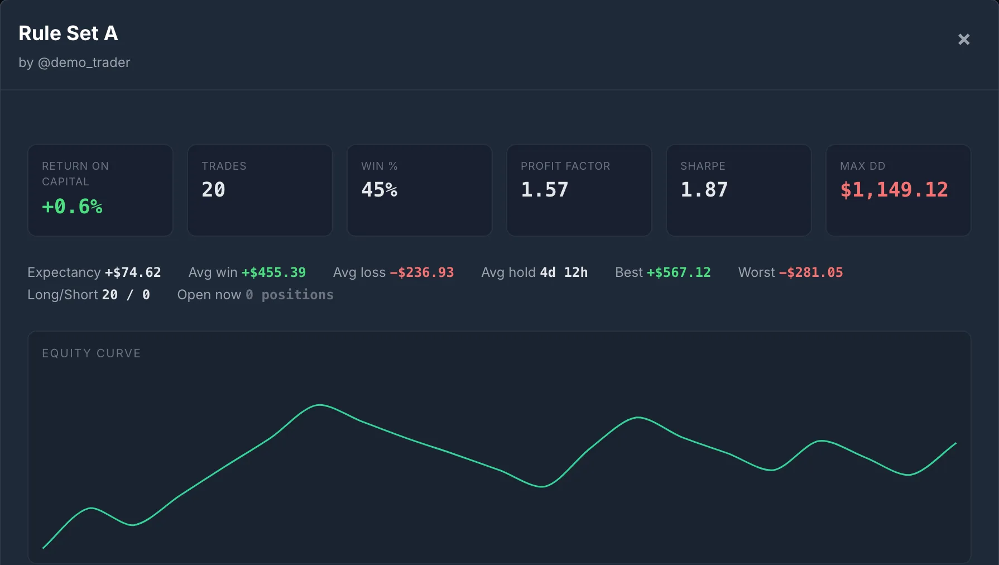
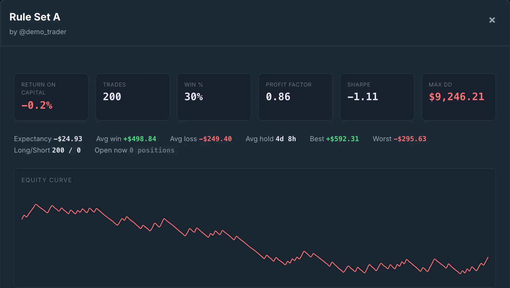

Eight Strategies, Zero Edge, 20 Trades Each
Every trade is measured against 1R of planned risk, about $250 in the demo account (whole-share sizing makes it vary by a few dollars). One in three trades wins between 1.6R and 2.4R, averaging +2R. The other two lose between 0.85R and 1.15R, averaging −1R. That works out to (1/3 × 2) − (2/3 × 1) = 0R per trade. This strategy has no positive expected return, though any finite run of it can finish up or down. We gave it eight different names. We drew 20 trades for each one, logged them in a SignalDeck demo account, and opened the Strategy Performance screen.

If you didn’t know where these came from, you would read this screen as four working strategies and four broken ones. Rule Set A looks ready for more size. Rule Set E, at −$3,418 and a Sharpe of −6.79, looks like it should be deleted today. Both are the same strategy. E is not broken, and A is not working. E drew two winners in twenty, A drew nine, and that is all that separates them.
This is the problem with reading performance stats on a small sample. Every number on a card can look sure of itself, but for a system like this one, 20 trades can’t tell an edge from luck.
We Kept Trading the Winner
Picking the best-looking strategy and trading more of it is what most of us would do next, so we did it. Here is Rule Set A after its first 20 trades:

And here is the same strategy after 180 more trades, drawn from the same distribution:

The win rate fell from 45% to 30%, close to the true one in three. Profit factor went from 1.57 to 0.86, and Sharpe from 1.87 to −1.11. The drawdown grew from $1,149 to $9,246, about 37R at $250 a trade. At 200 trades the strategy is now slightly below its true value of zero. That is luck too, just smaller, because 200 trades leave less room for it.
Nothing about the strategy changed. The first 20 trades were just a lucky stretch, and that stretch is the reason we picked it.
This Was Not a Rigged Draw
We fixed the random seed before the first run and used the first draw we got. To check that it was typical, we ran the same experiment 20,000 times: eight zero-edge strategies, 20 trades each.
- One strategy on its own showed a profit factor of 1.5 or better after 20 trades 19% of the time. About one in five tries at a no-edge idea looks good enough to keep.
- The best of eight reached a profit factor of 1.5 or better 81% of the time, and 2.0 or better 42% of the time. The median best-of-eight had a profit factor of 1.92 and an expectancy of +0.47R a trade.
So our Rule Set A, at 1.57, was a mild result. In this simulation, trying eight independent zero-edge setups and keeping the best one usually produced a profit factor near 2. Real setups are often correlated, which shrinks that effect, but it never makes it go away. The more ideas you test, the better the best one will look by chance alone. That is why the number of things you tried matters as much as how good the winner looks.
The One Formula That Answers the Question
Measure every trade in R-multiples. Your expectancy is the average R. How far you can trust that average depends on two things: how much your trades vary, and how many you have.
95% range ≈ average R ± 2 × standard error
In a spreadsheet with your R-multiples in column R, that is =AVERAGE(R:R) plus or minus =2*STDEV(R:R)/SQRT(COUNT(R:R)). If the range includes zero, you haven’t shown an edge yet. This is a rough guide: it assumes your trades are independent and the strategy hasn’t changed, and it gets less reliable on small, lopsided samples.
Rule Set A at 20 trades averaged +0.30R with a standard deviation of 1.43R. The standard error is 1.43 ÷ √20 = 0.32R, so the range runs from about −0.34R to +0.94R a trade. That covers zero, a decent edge and a spectacular one. At 200 trades it narrows to about −0.29R to +0.10R, which still includes zero (the true answer) and now rules out the big edge the first 20 trades seemed to show.
Turn the formula around and you get a sample size. A system with a 1R stop and a 2R target has a standard deviation around 1.4R. The first column below is the point where a strategy that delivers exactly its true edge would clear zero by two standard errors: N ≈ (2 × StdDev ÷ edge)². That is a minimum, not a guarantee. Results scatter around the true edge, so at that count a real edge clears the bar only about half the time. The second column is the count where it clears the bar about four times in five.
| True edge per trade | Clears zero on average | Clears zero 4 times in 5 |
|---|---|---|
| +0.5R (exceptional) | 30 | 60 |
| +0.3R | 90 | 170 |
| +0.2R | 200 | 390 |
| +0.1R | 780 | 1,540 |
Approximate trade counts, assuming a standard deviation of 1.4R and independent trades. The second column is the standard 80%-power sample size at a 5% significance level. Neither column accounts for picking the best of several strategies, which needs more.
Two things follow from this table. Smaller edges need many more trades, because halving the edge quadruples the sample. And the count depends on how much your results vary, not just on win rate. A system whose profit comes from rare, large winners usually has a bigger standard deviation, so it often needs hundreds of trades rather than dozens.
If this ratio looks familiar, it is because SQN is built from it: √N × average R ÷ StdDev(R) is the same “average divided by its standard error” (before SQN’s usual cap at 100 trades). An uncapped SQN above 2 is roughly where that range stops including zero. Like every other statistic here, it carries no adjustment for how many strategies you tried before this one.
Win Rate and Profit Factor Are Just as Shaky
The same small-sample problem applies to every number on the card, including the two that traders quote most.
| Rule Set A | After 20 trades | After 200 trades | True value |
|---|---|---|---|
| Expectancy | +0.30R −0.34 to +0.94 | −0.10R −0.29 to +0.10 | 0R |
| Win rate | 45% 26% to 66% | 30% 24% to 37% | 33% |
| Profit factor | 1.58 0.61 to 3.84 | 0.86 0.62 to 1.15 | 1.0 |
Approximate 95% ranges, unadjusted. Expectancy is the average ± 2 standard errors, win rate uses the Wilson interval, and profit factor comes from 20,000 bootstrap resamples of the trades. Rule Set A was picked as the best of eight, and these ranges ignore that, so its 20-trade ranges are too optimistic. The honest test of a strategy you picked is fresh trades after you picked it, which is what the next 180 trades were. Figures are computed from the simulated R-multiples. The app rounds through dollar fills, so its card shows 1.57 where the raw R gives 1.58.
A 45% win rate on 20 trades is consistent with anything from about one win in four to two wins in three. A profit factor of 1.58 on 20 trades is consistent with a strategy that wins back only 61 cents for every dollar it loses, and with one that makes almost four dollars for every dollar lost. Win rate has other problems too, but sample size comes first. Profit factor also has a failure of its own: with no losing trades it is undefined, and many tools show it as infinite. Three wins in a row shows as the best profit factor possible.
A Real Edge Can Look Broken Too
Luck works in both directions. We ran the reverse test: a strategy with a real edge of +0.2R a trade (the same 1R stop and 2R target, winning two trades in five), traded 20,000 times over. This is how often it was still down overall:
| Trades taken | Chance a +0.2R strategy is net negative |
|---|---|
| 20 | 26% |
| 50 | 17% |
| 100 | 8% |
| 200 | 3% |
Under this +0.2R model, about one 20-trade run in four finishes down. If they quit and switch setups, they throw away the edge they were looking for. Rule Set E in the screenshot shows the same thing from the other side. It had zero edge, not a negative one, and still looked like a disaster at 20 trades.
A long losing record is different. When our founder’s flagship strategy lost money with a profit factor of 0.85 over 343 trades (the full story is here), the 343 is what made it worth acting on. On its own, a profit factor of 0.85 over 343 trades is a strong warning rather than proof, since whether the range clears zero depends on how much those trades varied. The same ratio on 20 trades would have meant almost nothing.
Rules You Can Actually Use
- Read the trade count before any other number. Win rate, profit factor and Sharpe mean nothing until you know the sample. Under 30 trades, treat every figure as a rumour.
- Decide the sample size before you start. Write it down: “I will judge this setup after 100 trades at fixed risk.” If you decide when to stop by watching the equity curve, you’ll stop on a high or quit on a low, and either way the result is biased.
- Count everything you tried. If the winner is the best of eight setups, it needs a bigger margin than a single idea tested alone. Keep the losers in your journal under their own strategy label rather than deleting them, so you can see how many you tried.
- Use the range, not the point. Report expectancy as “+0.3R, somewhere between −0.3R and +0.9R.” If that range includes zero, size the strategy as if the edge might be zero.
- Test fewer ideas for longer. Three setups at 100 trades each tell you more than ten setups at 30.
- Stress-test the path, too. Even a real edge can have long drawdowns. Monte Carlo resampling of your actual trades shows how bad a run you should expect at your size.
What SignalDeck Shows, and What It Doesn’t
Every card on the Strategy Performance screen puts the trade count next to the strategy name. When we covered our founder’s live-stream scoreboard in August, the app would show a Sharpe ratio calculated on three trades. That has since changed. SignalDeck now hides Sharpe (it shows a dash) when a strategy has fewer than 10 closed trades, or when its results are so uniform that the ratio stops meaning anything. Profit factor shows as ∞ when there are no losing trades.
Net P&L, profit factor, expectancy and win rate still show on any sample, including a single trade, and SignalDeck doesn’t yet show a confidence range next to them. Until it does, the trade count on the card is your guard. The formula above takes a minute in a spreadsheet, using the R-multiple column in SignalDeck’s trade export, or you can ask an assistant connected to your journal to work it out for each strategy.
The account is a simulated demo, not anyone’s real trading. Each trade’s R-multiple was drawn at random from the zero-edge distribution described above (seed fixed before the first run). Symbols, dates and prices were generated to carry those R-multiples at about $250 of risk a trade (whole shares) and are not real fills, so no trade-level screenshot is shown. Screenshots are from SignalDeck’s current release on a local test server, November 13, 2026, unedited apart from cropping. Nothing here is a recommendation to buy or sell anything.
FAQ
How many trades do I need to know if my trading strategy works?
It depends on how big your edge is and how much your trades vary. For a system with a 1R stop and a 2R target (standard deviation about 1.4R), a strategy delivering exactly a +0.5R edge clears zero by two standard errors at about 30 trades, +0.3R at about 90, +0.2R at about 200 and +0.1R at about 780. Those are minimums: to catch a real edge about four times in five takes roughly twice as many (about 60, 170, 390 and 1,540). Systems with bigger, rarer winners usually need more.
Is 30 trades enough to judge a strategy?
Only if the edge is exceptional, around +0.5R a trade or more, and even then 30 trades catches it only about half the time. In our test, four of eight strategies with zero edge were in profit after 20 trades, and the best showed a profit factor of 1.57. Under 30 trades, treat every statistic as a rumour.
How do I calculate a confidence interval for my trading expectancy?
Put your R-multiples in a column. A rough 95% range is the average R plus or minus 2 x STDEV(R) / SQRT(COUNT(R)). If the range includes zero, you have not shown an edge yet. A 20-trade strategy averaging +0.30R with a standard deviation of 1.43R has a range of about -0.34R to +0.94R. The range assumes independent trades from an unchanged strategy, and it is too optimistic if you picked this strategy as the best of several.
Why does a strategy look great at first and then stop working?
Often it never worked. If you try several setups and keep the best-looking one, chance alone makes the best one look good. In our simulation of eight independent zero-edge strategies at 20 trades each, run 20,000 times, the best one had a profit factor of 1.5 or more 81% of the time. Traded on, it drifts back to its true edge.
Does SignalDeck warn about small sample sizes?
Partly. Every strategy card shows its trade count, and the Sharpe ratio is hidden below 10 closed trades or when results are too uniform for it to mean anything. Net P&L, profit factor and win rate show on any sample, and there is no confidence range next to them yet, so read the trade count first.
Related Articles
How to Calculate SQN
The sample-size-aware score built on the same ratio.
Why Journal Trades at All?
343 trades at PF 0.85, and what one net number hides.
Why Your Win Rate Is Lying
The metrics that matter more than hit rate.
Monte Carlo Simulation for Traders
How bad can a run get with the edge you have?
Count the trades before you trust the numbers
SignalDeck calculates R-based statistics for every trade with a recorded stop and puts the trade count on every strategy card. Free during beta; Pro is $30/mo and Elite $50/mo when billing launches.